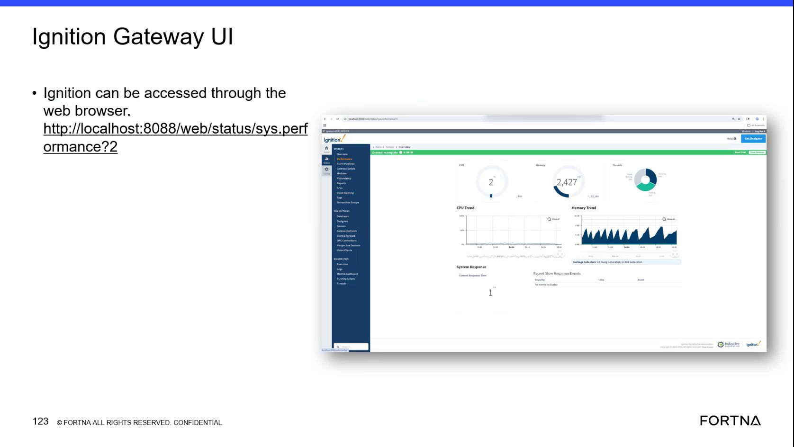

| Procedure ID | proc_diagnose_ignition_gateway_performance_using_the_performance_page_v1 |
|---|---|
| Title | Diagnose Ignition Gateway Performance Using the Performance Page |
| Procedure Type | diagnostic |
| Primary Role | L2_support |
| Support Safe | Yes |
| Capability Tags | gateway_health |
| Access Surface | ignition_gateway |
| Audience Roles | L2_support |
| Failure Pattern Tags | gateway_unhealthy |
| Validation Status | needs_sme_review |
| Merge Status | source_finalized |
Use the Ignition gateway performance page in a web browser to review Memory Trend, CPU Trend, System Response, Current Response Time, and Recent Slow Response Events while investigating an OptiSweep system issue. The memory chart can provide evidence of a spike followed by a drop to 0, but the Gateway chart alone does not establish the underlying application fault.
Use the Ignition gateway performance page when investigating an OptiSweep system issue and Gateway-level memory, response, or slow-response behavior needs to be checked.

Responsible role: L2_support
Instruction:
In a web browser, open the Ignition gateway and navigate to `/web/status/sys.performance?2`. Confirm that the page is the Ignition gateway performance page, not Perspective.
Expected result:
The Ignition gateway performance page opens and displays Gateway performance sections, including Memory Trend, CPU Trend, System Response, Current Response Time, and Recent Slow Response Events.
Stop or Escalate If:
Responsible role: L2_support
Instruction:
On the Ignition gateway performance page, inspect the Memory Trend chart. Determine whether the displayed memory usage shows a spike followed by a drop to 0.
Expected result:
The current Memory Trend behavior is observable, including whether a spike followed by a drop to 0 is present.
Stop or Escalate If:
Responsible role: L2_support
Instruction:
On the Ignition gateway performance page, inspect CPU Trend, System Response, Current Response Time, and Recent Slow Response Events. Read the displayed values and determine whether Recent Slow Response Events contains entries or displays `No events to display`.
Expected result:
The displayed CPU Trend, System Response, Current Response Time, and Recent Slow Response Events state are observable.
Stop or Escalate If:
Responsible role: L2_support
Instruction:
Record the currently displayed Memory Trend pattern, CPU Trend, System Response, Current Response Time, and Recent Slow Response Events state. Correlate these observations with the reported OptiSweep system behavior, and do not conclude that the Ignition gateway is the sole cause from the chart alone.
Expected result:
The live Gateway observations and their relationship to the reported symptom are captured, with any uncertainty or unexplained symptom identified for further troubleshooting.
Stop or Escalate If: